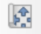

4 KDE map
4.1 Map export
In this tutorial we have acquired some surname data, created a spatial data object by loading the data into QGIS, described our data with the help of a Kernel Density Estimation process, and we have looked at some of the styling options. The final step is to finalise the styling and get the map out of QGIS. This is done through the QGIS Print Layout:
- Go to Project > New Print Layout ….
- Give it a name, e.g.
kde_map. - A new window opens up. In the toolbar on the left hand side of this new window (i.e. the so-called Print Layout), click on the Add map button:

- Draw a box on the canvas. The KDE surname map, with all the active map layers, should now appear.
- In the toolbar on the left hand side, click on the Move item content button:
 - Within the box you have drawn, you can now reposition the map layers to your liking.
- The toolbar on the left hand side contains several other options to style your map such as Add scale bar, Add North Arrow, and Add Legend. So go ahead and make a pretty map. There are lots of options to play around with!
Once you are happy with your map, you can save your map by going to Layout > Export as Image …. If you get a message popping up saying something about Project Contains WMS Layers just click on Close. Navigate to your working directory, create an optional output folder, give your map a name and click Save. Also click Save on the next window that pops up. These steps should create an image which you should be able to find in your working directory that you can now open outside of QGIS.
The GIF below gives an example of these steps:
![Finalising a map in the **Print Layout** and saving a map as an image. [[Enlarge image]](https://jtvandijk.github.io/GEOVIS/images/geovis/export_map.gif){target="_blank"}](images/geovis/export_map.gif)
Figure 4.1: Finalising a map in the Print Layout and saving a map as an image. [Enlarge image]
Although the map in the example probably needs a little TLC, the image is now ready to be used outside QGIS. This brings us to the end of Section 4.
Note
There are many, many more options on how to style the maps, so do play around with colours and settings when making your maps. For more details and suggestions: the QGIS manual is an excellent resource for any information on how to change specific elements of your map layout.
4.2 Challenge
Now we have been through all the steps from data loading, to making a quick visualisation and executing a full Kernel Density Estimation, you are now challenged to create two surname density maps using the surname datasets of Smith and Novak.
Some tips:
- Pay attention to the different sizes of the datasets, particulary the Smith dataset contains quite a few records; this may affect some of your KDE parameters and, if using, your extraction of contour levels.
- Play around with the kernel type and bandwidth - you may want to use a different bandwidth for each of the names.
- Refer to the QGIS manual for adjusting specific elements of your map layout.
- Google is your friend. When working in a GIS-environment you often will encounter some challenges - but in many cases someone else has had the same challenges and posted about them online!
Who has made the nicest visualisation? Do share your maps with the other participants of the ISSonVis 2022!